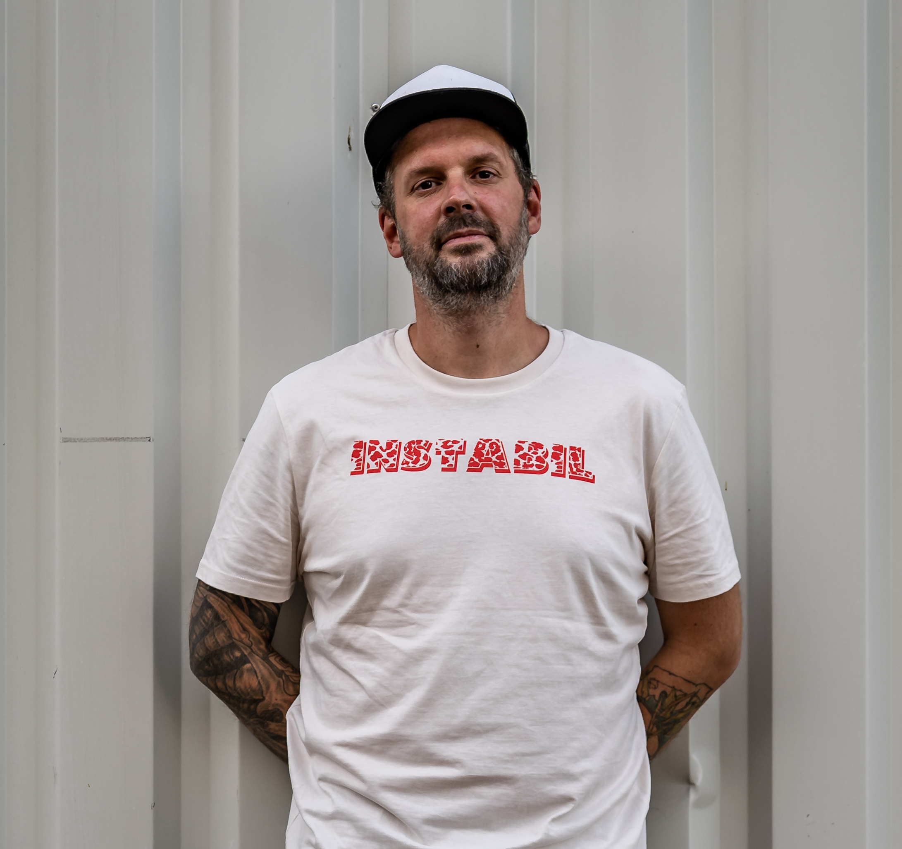

Heiko Mohr
about me | contact me

Summary
Hi. My name is Heiko and besides learning web developing I am deeply into music making and audio engineering.
I wanted to start coding since forever but never got to it. Now I am starting with learning things from scratch and maybe someday I can be a web developer.
Education
Since I finished school I learned several different tasks.
Originally I am a metal worker, then got into audio engineering but worked forever in customer service.
While working in customer service I began to study journalism but that wasnt for me. Then I worked as a SEO Guy at a news magazine, learned Online Marketing from scratch to then
got back to customer service. Now I want to learn something that makes fun and brings me with joy towards retirement. Web Developing, come save my life please.
Work experience
A lot of. But nothing that makes me happy.
Skills
I can open a beer with another beer.

..for now.